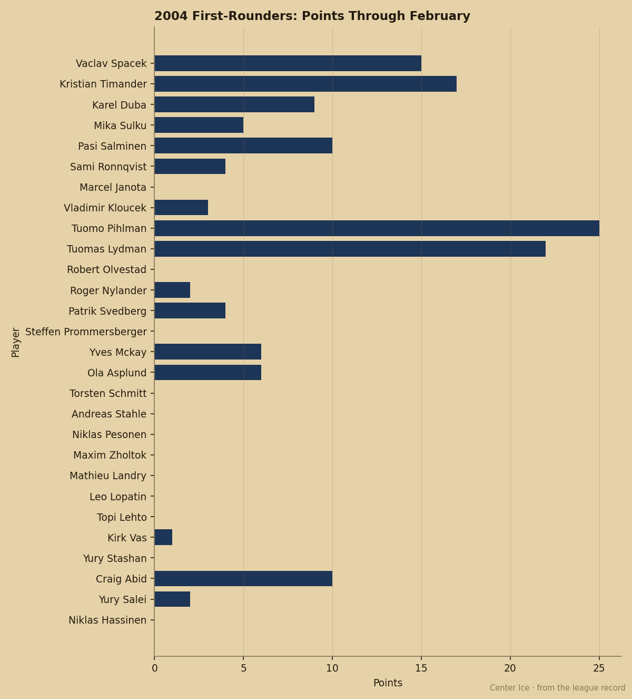

Twelve of the 28 First-Rounders From June Have Potential Below Their Overall
Six months after the draft, the Book's potential grade has turned negative for more than a third of the class. Five of the top 10 are among them.
 Pete LarocqueScouting editor · The Prospect File
Pete LarocqueScouting editor · The Prospect File
Craig Abid

Twelve of the 28 first-rounders from June 2004 carry a potential grade below their overall. The Bureau's potential figure measures the likelihood of development. When it sits under the current grade, the player has already shown most of what he will become.
Five of the top 10 picks fall in that group. Kristian Timander71 at  New York Islanders sits at 70 overall with a 66 potential. Karel Duba74 at
New York Islanders sits at 70 overall with a 66 potential. Karel Duba74 at  Los Angeles Kings is 72 with a 51. Pasi Salminen71 at
Los Angeles Kings is 72 with a 51. Pasi Salminen71 at  Pittsburgh Penguins is 68 overall with a 63 potential. Tuomo Pihlman73 at
Pittsburgh Penguins is 68 overall with a 63 potential. Tuomo Pihlman73 at  Minnesota Wild is 69 overall with a 56. Tuomas Lydman74 at
Minnesota Wild is 69 overall with a 56. Tuomas Lydman74 at  Mighty Ducks of Anaheim is 70 with a 52.
Mighty Ducks of Anaheim is 70 with a 52.
The other five, Vaclav Spacek77, Mika Sulku72, Sami Ronnqvist70, Marcel Janota69 and Vladimir Kloucek70, carry potential grades above their current overall and are still considered projects.
The 21-point gap belongs to the 3rd pick
Karel Duba was the 3rd overall selection. He is 19 with 9 points in 29 games at 9.0 minutes a night for Los Angeles Kings. His potential grade of 51 is 21 points below his overall and the lowest mark of any first-rounder from the class. The 3rd pick in the draft is finished growing.
Duba is already producing, which is what makes the number land hard. A 19-year-old at 29 games and 9 points from the 3rd slot is not a bust by any reasonable measure. The 3rd pick in June might just be the end of the line.

| Pick | Player | Team | Overall | Potential | Gap | GP | Points |
|---|---|---|---|---|---|---|---|
| 2 | Timander | NYI | 70 | 66 | -4 | 27 | 17 |
| 3 | Duba | LA | 72 | 51 | -21 | 29 | 9 |
| 5 | Salminen | PIT | 68 | 63 | -5 | 31 | 10 |
| 9 | Pihlman | MIN | 69 | 56 | -13 | 47 | 25 |
| 10 | Lydman | ANA | 70 | 52 | -18 | 49 | 22 |
| 11 | Olvestad | BUF | 70 | 60 | -10 | 0 | 0 |
| 13 | Svedberg | TB | 73 | 72 | -1 | 42 | 4 |
| 22 | Landry | FLA | 65 | 63 | -2 | 0 | 0 |
| 24 | Lehto | PHI | 62 | 52 | -10 | 1 | 0 |
| 25 | Vas | NSH | 68 | 65 | -3 | 5 | 1 |
| 26 | Stashan | COL | 67 | 62 | -5 | 0 | 0 |
| 29 | Salei | MIN | 64 | 63 | -1 | 17 | 2 |
Eight first-rounders have not played a single game
Robert Olvestad68 went 11th to  Buffalo Sabres and has zero games. So do Steffen Prommersberger66 (14th,
Buffalo Sabres and has zero games. So do Steffen Prommersberger66 (14th,  Ottawa Senators), Torsten Schmitt71 (17th,
Ottawa Senators), Torsten Schmitt71 (17th,  Chicago Blackhawks), Maxim Zholtok65 (21st,
Chicago Blackhawks), Maxim Zholtok65 (21st,  Edmonton Oilers), Mathieu Landry71 (22nd,
Edmonton Oilers), Mathieu Landry71 (22nd,  Florida Panthers), Leo Lopatin61 (23rd,
Florida Panthers), Leo Lopatin61 (23rd,  Washington Capitals), Yury Stashan65 (26th,
Washington Capitals), Yury Stashan65 (26th,  Colorado Avalanche) and Niklas Hassinen64 (30th,
Colorado Avalanche) and Niklas Hassinen64 (30th,  Dallas Stars).
Dallas Stars).
That is 8 of 28 first-rounders who have not dressed for a single league game in six months. Their contracts run 1 to 3 more years and pay between $0.81M and $1.03M. The Chicago Blackhawks and Florida Panthers goaltenders, Schmitt and Landry, carry 3-year deals. They sit on the bench or stay in juniors.
The upside is concentrated in 3 men who barely play
The highest potential grade in the class belongs to Andreas Stahle71, the 19th pick at  Toronto Maple Leafs. His potential reads 96, 28 points above his current overall of 68. He has played 2 games and logged 17.0 minutes of total ice time.
Toronto Maple Leafs. His potential reads 96, 28 points above his current overall of 68. He has played 2 games and logged 17.0 minutes of total ice time.
Roger Nylander73, 12th to  San Jose Sharks, carries a 94 potential at 73 overall. He has 2 points in 6 games and a shoulder injury that kept him out between late November and early December. Steffen Prommersberger, 14th to Ottawa Senators, carries an 85 potential and has not played.
San Jose Sharks, carries a 94 potential at 73 overall. He has 2 points in 6 games and a shoulder injury that kept him out between late November and early December. Steffen Prommersberger, 14th to Ottawa Senators, carries an 85 potential and has not played.
The class splits into two groups: players the Book has closed the file on, and players whose development has barely started. The men producing most points, Tuomo Pihlman with 25 and Tuomas Lydman with 22, are both in the "done" group. The men with the most room to grow, Stahle and Nylander, have combined for 8 games.
The 28th pick has played more games than any first-rounder
Craig Abid67 went 28th to  New York Rangers. He is 19, a defenseman, and has played 54 games at 9.1 minutes a night with 10 points. He carries a 73 potential, 10 above his 63 overall, and 3 years left on a $0.94M deal. No first-rounder from the class has played more than 49 games. The Bureau likes him, the coach plays him every night, and he is the best value from June on production and trust.
New York Rangers. He is 19, a defenseman, and has played 54 games at 9.1 minutes a night with 10 points. He carries a 73 potential, 10 above his 63 overall, and 3 years left on a $0.94M deal. No first-rounder from the class has played more than 49 games. The Bureau likes him, the coach plays him every night, and he is the best value from June on production and trust.